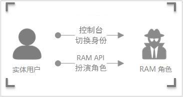
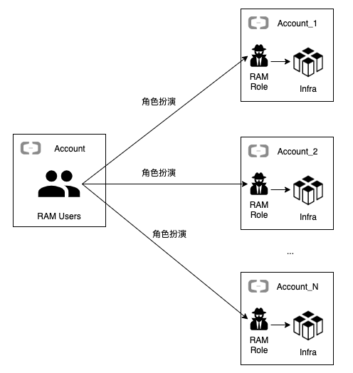
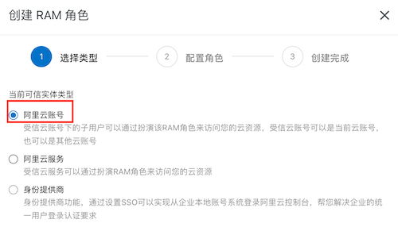
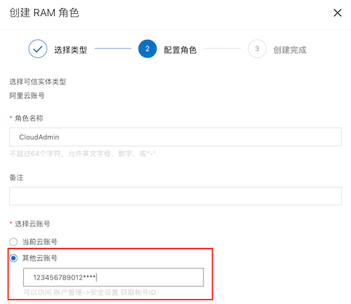
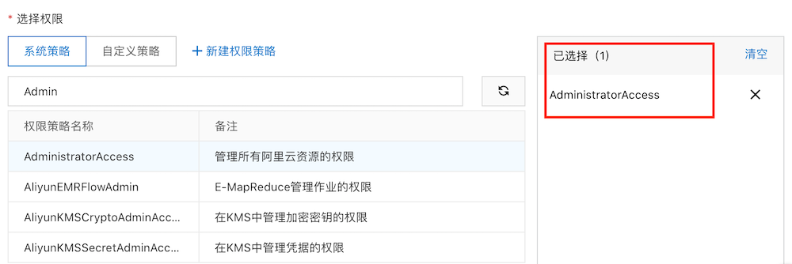
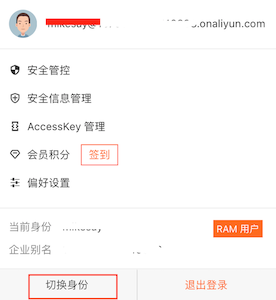
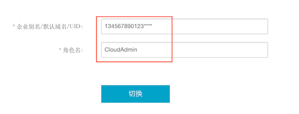

阿里云通过RAM角色管理多云账号下的资源
本文最后更新于：2021年1月14日 早上
云计算通过十几年的发展已经变得很成熟，无论是传统的企业还是初创企业都将云计算平台作为其数字化策略的支撑平台。在国内，阿里云是使用最广泛的公有云平台，很多本土企业和外资企业在华的分支机构都是首选阿里云来构建和运行他们的数字化产品。为了能够高效地使用阿里云，同时又能对接阿里云产品服务团队，在这些公司里逐渐地出现了一个新的角色或团队来统一规划、管理阿里云平台，我们就暂且称这个团队为云团队。大部分公司云团队往往需要管理十几个，或数十个阿里云账号，而在不同的账号里创建用户、登录、登出的操作往往会变的很麻烦。本文介绍通过切换身份的方式扮演RAM角色来管理多云账号下的资源。
多云账号
公司在使用阿里云的过程中，基于不同的目的或者受组织架构的约束，或多或少都会创建多个云账户。
为什么会存在着多个阿里云账号
传统的公司或者绝大部分外资公司在财务上都会为不同的部门或团队创建不同的成本中心(cost center)并分配对应的预算，部门或团队的开支都是走自己的成本中心。这就决定了当某个部门或团队在使用阿里云的时候，必定会创建自己的云账户，而不会去使用别的成本中心下的阿里云账号。对于一些中小型的互联网公司或者创业公司财务不会那么复杂，研发可能就一个成本中心，但是往往需要多个阿里云账号来隔离不同的环境，比如开发，测试，预生产和和生产环境。
多云账号的优点
使用多个阿里云账号有以下一些优点：
- 不同账号的云资源是完全隔离的，相互之间不受影响。
- 可以单独出账单，做到按不同成本中心核算。
- 如果是构建一个比较大的微服务系统，且每个组织或团队在自己的阿里云账号的基础架构里只维护一个或几个服务运行，这样可以做到阿里云基础架构相对简单。
多云账号的痛点
云团队在管理多个阿里云账号时也会遇到很多麻烦事：
- 账号切换都需要登出，登录和双因素认证。如果集成了单点登录(SSO)，可以省掉双因素认证的步骤，但当出现问题时，无法创建一个非SSO账号给阿里云技术支持临时调试问题（RAM角色登录的方式也能解决这个问题）。
- 团队成员入职，离职时都需要通知产品拥有者在阿里云账号里创建和删除RAM用户。
- 需要记住很多账号。
通过RAM角色管理多云账号
为了解决多云账号管理的痛点，可以通过RAM用户扮演RAM角色的方式来登录阿里云其它账号。
什么是RAM角色
RAM角色（RAM role）与RAM用户一样，都是RAM身份类型的一种。RAM角色是一种虚拟用户，没有确定的身份认证密钥，需要被一个受信的实体用户扮演才能正常使用。
RAM角色是一种虚拟用户，与实体用户（云账号、RAM用户和云服务）和教科书式角色（Textbook role）不同。
- 实体用户：拥有确定的登录密码或访问密钥。
- 教科书式角色：教科书式角色或传统意义上的角色是指一组权限集合，类似于RAM里的权限策略。如果一个用户被赋予了这种角色，也就意味着该用户被赋予了一组权限，可以访问被授权的资源。
- RAM角色：RAM角色有确定的身份，可以被赋予一组权限策略，但没有确定的登录密码或访问密钥。RAM角色需要被一个受信的实体用户扮演，扮演成功后实体用户将获得RAM角色的安全令牌，使用这个安全令牌就能以角色身份访问被授权的资源。
RAM角色使用方法
RAM角色指定可信实体，即指定可以扮演角色的实体用户身份。
可信实体通过控制台或调用API扮演角色并获取角色令牌。

为RAM角色绑定权限策略，详情请参见为RAM角色授权。
受信实体通过扮演角色，使用角色令牌访问阿里云资源。
RAM角色类型
根据RAM可信实体的不同，RAM支持以下三种类型的角色：
阿里云账号：允许RAM用户所扮演的角色。扮演角色的RAM用户可以属于自己的云账号，也可以属于其他云账号。此类角色主要用来解决跨账号访问和临时授权问题。
阿里云服务：允许云服务所扮演的角色。此类角色主要用于授权云服务代理您进行资源操作。
身份提供商：允许受信身份提供商下的用户所扮演的角色。此类角色主要用于实现与阿里云的SSO。
实施
实施架构

实施步骤
云团队得拥有自己的云账号，用于测试目的或用于部署运行一些中央服务，每个成员都有对应的RAM用户。假设云账户ID为123456789012****。
假设业务部门的云账户为134567890123****，产品拥有者参考“创建可信实体为阿里云账号的RAM角色”，在自己的云账号下为云团队的账号123456789012****创建RAM角色”CloudAdmin”，并给角色分配”AdministratorAccess”权限



并设置以下授信策略
1
2
3
4
5
6
7
8
9
10
11
12
13
14{
"Statement": [
{
"Action": "sts:AssumeRole",
"Effect": "Allow",
"Principal": {
"RAM": [
"acs:ram::123456789012****:root"
]
}
}
],
"Version": "1"
}云团队在自己的云账号里为RAM用户授予角色扮演权限”AliyunSTSAssumeRoleAccess”。
云团队的某个RAM用户在登录云团队的账号下，通过切换角色并输入业务部门云账号或者别名，以及对应的角色”CloudAdmin”就能切换进业务部门云账号环境里。


做完管理后，可以切换回云团队账号。
当云团队成员离职时，只需把他从云团队账号删除即可。
按照这种策略，云团队可以通过RAM角色管理多个业务部门的云账号。
本博客所有文章除特别声明外，均采用 CC BY-SA 4.0 协议 ，转载请注明出处！